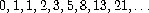
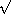
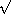
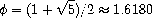
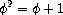
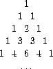
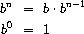
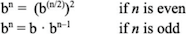
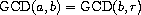
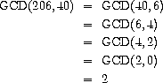

1.2 Procedures and the Processes They Generate
We have now considered the elements of programming: We have used primitive arithmetic operations, we have combined these operations, and we have abstracted these composite operations by defining them as compound procedures. But that is not enough to enable us to say that we know how to program. Our situation is analogous to that of someone who has learned the rules for how the pieces move in chess but knows nothing of typical openings, tactics, or strategy. Like the novice chess player, we don't yet know the common patterns of usage in the domain. We lack the knowledge of which moves are worth making (which procedures are worth defining). We lack the experience to predict the consequences of making a move (executing a procedure).
The ability to visualize the consequences of the actions under consideration is crucial to becoming an expert programmer, just as it is in any synthetic, creative activity. In becoming an expert photographer, for example, one must learn how to look at a scene and know how dark each region will appear on a print for each possible choice of exposure and development conditions. Only then can one reason backward, planning framing, lighting, exposure, and development to obtain the desired effects. So it is with programming, where we are planning the course of action to be taken by a process and where we control the process by means of a program. To become experts, we must learn to visualize the processes generated by various types of procedures. Only after we have developed such a skill can we learn to reliably construct programs that exhibit the desired behavior.
A procedure is a pattern for the local evolution of a computational process. It specifies how each stage of the process is built upon the previous stage. We would like to be able to make statements about the overall, or global, behavior of a process whose local evolution has been specified by a procedure. This is very difficult to do in general, but we can at least try to describe some typical patterns of process evolution.
In this section we will examine some common ``shapes'' for processes generated by simple procedures. We will also investigate the rates at which these processes consume the important computational resources of time and space. The procedures we will consider are very simple. Their role is like that played by test patterns in photography: as oversimplified prototypical patterns, rather than practical examples in their own right.
1.2.1 Linear Recursion and Iteration

Figure 1.3: A linear recursive process for computing 6!.
We begin by considering the factorial function, defined by

There are many ways to compute factorials. One way is to make use of the observation that n! is equal to n times (n - 1)! for any positive integer n:

Thus, we can compute n! by computing (n - 1)! and multiplying the result by n. If we add the stipulation that 1! is equal to 1, this observation translates directly into a procedure:
(define (factorial n)
(if (= n 1)
1
(* n (factorial (- n 1)))))
We can use the substitution model of section 1.1.5 to watch this procedure in action computing 6!, as shown in figure 1.3.
Now let's take a different perspective on computing factorials. We could describe a rule for computing n! by specifying that we first multiply 1 by 2, then multiply the result by 3, then by 4, and so on until we reach n. More formally, we maintain a running product, together with a counter that counts from 1 up to n. We can describe the computation by saying that the counter and the product simultaneously change from one step to the next according to the rule
product  counter · product
counter · product
counter counter + 1
and stipulating that n! is the value of the product when the counter exceeds n.

Figure 1.4: A linear iterative process for computing 6!.
Once again, we can recast our description as a procedure for computing factorials:^[29]{.small}^
(define (factorial n)
(fact-iter 1 1 n))
(define (fact-iter product counter max-count)
(if (> counter max-count)
product
(fact-iter (* counter product)
(+ counter 1)
max-count)))
As before, we can use the substitution model to visualize the process of computing 6!, as shown in figure 1.4.
Compare the two processes. From one point of view, they seem hardly different at all. Both compute the same mathematical function on the same domain, and each requires a number of steps proportional to n to compute n!. Indeed, both processes even carry out the same sequence of multiplications, obtaining the same sequence of partial products. On the other hand, when we consider the ``shapes'' of the two processes, we find that they evolve quite differently.
Consider the first process. The substitution model reveals a shape of expansion followed by contraction, indicated by the arrow in figure 1.3. The expansion occurs as the process builds up a chain of deferred operations (in this case, a chain of multiplications). The contraction occurs as the operations are actually performed. This type of process, characterized by a chain of deferred operations, is called a recursive process. Carrying out this process requires that the interpreter keep track of the operations to be performed later on. In the computation of n!, the length of the chain of deferred multiplications, and hence the amount of information needed to keep track of it, grows linearly with n (is proportional to n), just like the number of steps. Such a process is called a linear recursive process.
By contrast, the second process does not grow and shrink. At each step,
all we need to keep track of, for any n, are the current values of the
variables product, counter, and max-count. We call this an
iterative process. In general, an
iterative process is one whose state can be summarized by a fixed number
of state variables, together with a fixed rule that
describes how the state variables should be updated as the process moves
from state to state and an (optional) end test that specifies conditions
under which the process should terminate. In computing n!, the number
of steps required grows linearly with n. Such a process is called a
linear iterative process.
The contrast between the two processes can be seen in another way. In the iterative case, the program variables provide a complete description of the state of the process at any point. If we stopped the computation between steps, all we would need to do to resume the computation is to supply the interpreter with the values of the three program variables. Not so with the recursive process. In this case there is some additional ``hidden'' information, maintained by the interpreter and not contained in the program variables, which indicates ``where the process is'' in negotiating the chain of deferred operations. The longer the chain, the more information must be maintained.^[30]{.small}^
In contrasting iteration and recursion, we must be careful not to
confuse the notion of a recursive process
with the notion of a recursive procedure. When we describe a procedure
as recursive, we are referring to the syntactic fact that the procedure
definition refers (either directly or indirectly) to the procedure
itself. But when we describe a process as following a pattern that is,
say, linearly recursive, we are speaking about how the process evolves,
not about the syntax of how a procedure is written. It may seem
disturbing that we refer to a recursive procedure such as fact-iter as
generating an iterative process. However, the process really is
iterative: Its state is captured completely by its three state
variables, and an interpreter need keep track of only three variables in
order to execute the process.
One reason that the distinction between process and procedure may be
confusing is that most implementations of common languages (including
Ada, Pascal, and C) are
designed in such a way that the interpretation of any recursive
procedure consumes an amount of memory that grows with the number of
procedure calls, even when the process described is, in principle,
iterative. As a consequence, these languages can describe iterative
processes only by resorting to special-purpose ``looping
constructs'' such as do, repeat, until, for, and while. The
implementation of Scheme we shall consider in chapter 5 does not share
this defect. It will execute an iterative process in constant space,
even if the iterative process is described by a recursive procedure. An
implementation with this property is called
tail-recursive. With a tail-recursive implementation,
iteration can be expressed using the ordinary procedure
call mechanism, so that special iteration constructs are useful only as
syntactic
sugar.^[31]{.small}^
Exercise 1.9. Each of the following two procedures
defines a method for adding two positive integers in terms of the
procedures inc, which increments its argument by 1, and dec, which
decrements its argument by 1.
(define (+ a b)
(if (= a 0)
b
(inc (+ (dec a) b))))
(define (+ a b)
(if (= a 0)
b
(+ (dec a) (inc b))))
Using the substitution model, illustrate the process generated by each
procedure in evaluating (+ 4 5). Are these processes iterative or
recursive?
Exercise 1.10. The following procedure computes a mathematical function called Ackermann's function.
(define (A x y)
(cond ((= y 0) 0)
((= x 0) (* 2 y))
((= y 1) 2)
(else (A (- x 1)
(A x (- y 1))))))
What are the values of the following expressions?
(A 1 10)
\
(A 2 4)
\
(A 3 3)
Consider the following procedures, where A is the procedure defined
above:
(define (f n) (A 0 n))
(define (g n) (A 1 n))
(define (h n) (A 2 n))
(define (k n) (* 5 n n))
Give concise mathematical definitions for the functions computed by the
procedures f, g, and h for positive integer values of n. For
example, (k n) computes 5n^2^.
1.2.2 Tree Recursion
Another common pattern of computation is called tree recursion. As an example, consider computing the sequence of Fibonacci numbers, in which each number is the sum of the preceding two:

In general, the Fibonacci numbers can be defined by the rule

We can immediately translate this definition into a recursive procedure for computing Fibonacci numbers:
(define (fib n)
(cond ((= n 0) 0)
((= n 1) 1)
(else (+ (fib (- n 1))
(fib (- n 2))))))

Figure 1.5: The tree-recursive process generated in computing
(fib 5).
Consider the pattern of this computation. To compute (fib 5), we
compute (fib 4) and (fib 3). To compute (fib 4), we compute
(fib 3) and (fib 2). In general, the evolved process looks like a
tree, as shown in figure 1.5. Notice that
the branches split into two at each level (except at the bottom); this
reflects the fact that the fib procedure calls itself twice each time
it is invoked.
This procedure is instructive as a prototypical tree recursion, but it
is a terrible way to compute Fibonacci numbers because it does so much
redundant computation. Notice in
figure 1.5 that the entire computation of
(fib 3) -- almost half the work -- is duplicated. In fact, it is not
hard to show that the number of times the procedure will compute
(fib 1) or (fib 0) (the number of leaves in the above tree, in
general) is precisely Fib(n + 1). To get an idea of how bad this is,
one can show that the value of Fib(n) grows
exponentially with n. More precisely (see
exercise 1.13), Fib(n) is the closest
integer to  ^n^
/5, where
^n^
/5, where

is the golden ratio, which satisfies the equation

Thus, the process uses a number of steps that grows exponentially with the input. On the other hand, the space required grows only linearly with the input, because we need keep track only of which nodes are above us in the tree at any point in the computation. In general, the number of steps required by a tree-recursive process will be proportional to the number of nodes in the tree, while the space required will be proportional to the maximum depth of the tree.
We can also formulate an iterative process for computing the Fibonacci numbers. The idea is to use a pair of integers a and b, initialized to Fib(1) = 1 and Fib(0) = 0, and to repeatedly apply the simultaneous transformations

It is not hard to show that, after applying this transformation n times, a and b will be equal, respectively, to Fib(n + 1) and Fib(n). Thus, we can compute Fibonacci numbers iteratively using the procedure
(define (fib n)
(fib-iter 1 0 n))
(define (fib-iter a b count)
(if (= count 0)
b
(fib-iter (+ a b) a (- count 1))))
This second method for computing Fib(n) is a linear iteration. The difference in number of steps required by the two methods -- one linear in n, one growing as fast as Fib(n) itself -- is enormous, even for small inputs.
One should not conclude from this that tree-recursive processes are
useless. When we consider processes that operate on hierarchically
structured data rather than numbers, we will find that tree recursion is
a natural and powerful
tool.^[32]{.small}^
But even in numerical operations, tree-recursive processes can be useful
in helping us to understand and design programs. For instance, although
the first fib procedure is much less efficient than the second one, it
is more straightforward, being little more than a translation into Lisp
of the definition of the Fibonacci sequence. To formulate the iterative
algorithm required noticing that the computation could be recast as an
iteration with three state variables.
Example: Counting change
It takes only a bit of cleverness to come up with the iterative Fibonacci algorithm. In contrast, consider the following problem: How many different ways can we make change of $ 1.00, given half-dollars, quarters, dimes, nickels, and pennies? More generally, can we write a procedure to compute the number of ways to change any given amount of money?
This problem has a simple solution as a recursive procedure. Suppose we think of the types of coins available as arranged in some order. Then the following relation holds:
The number of ways to change amount a using n kinds of coins equals
- the number of ways to change amount a using all but the first kind of coin, plus
- the number of ways to change amount a - d using all n kinds of coins, where d is the denomination of the first kind of coin.
To see why this is true, observe that the ways to make change can be divided into two groups: those that do not use any of the first kind of coin, and those that do. Therefore, the total number of ways to make change for some amount is equal to the number of ways to make change for the amount without using any of the first kind of coin, plus the number of ways to make change assuming that we do use the first kind of coin. But the latter number is equal to the number of ways to make change for the amount that remains after using a coin of the first kind.
Thus, we can recursively reduce the problem of changing a given amount to the problem of changing smaller amounts using fewer kinds of coins. Consider this reduction rule carefully, and convince yourself that we can use it to describe an algorithm if we specify the following degenerate cases:^[33]{.small}^
- If a is exactly 0, we should count that as 1 way to make change.
- If a is less than 0, we should count that as 0 ways to make change.
- If n is 0, we should count that as 0 ways to make change.
We can easily translate this description into a recursive procedure:
(define (count-change amount)
(cc amount 5))
(define (cc amount kinds-of-coins)
(cond ((= amount 0) 1)
((or (< amount 0) (= kinds-of-coins 0)) 0)
(else (+ (cc amount
(- kinds-of-coins 1))
(cc (- amount
(first-denomination kinds-of-coins))
kinds-of-coins)))))
(define (first-denomination kinds-of-coins)
(cond ((= kinds-of-coins 1) 1)
((= kinds-of-coins 2) 5)
((= kinds-of-coins 3) 10)
((= kinds-of-coins 4) 25)
((= kinds-of-coins 5) 50)))
(The first-denomination procedure takes as input the number of kinds
of coins available and returns the denomination of the first kind. Here
we are thinking of the coins as arranged in order from largest to
smallest, but any order would do as well.) We can now answer our
original question about changing a dollar:
(count-change 100)
292\
Count-change generates a tree-recursive process with redundancies
similar to those in our first implementation of fib. (It will take
quite a while for that 292 to be computed.) On the other hand, it is not
obvious how to design a better algorithm for computing the result, and
we leave this problem as a challenge. The observation that a
tree-recursive process may be highly inefficient but often
easy to specify and understand has led people to propose that one could
get the best of both worlds by designing a ``smart compiler'' that
could transform tree-recursive procedures into more efficient procedures
that compute the same
result.^[34]{.small}^
Exercise 1.11. A function f is defined by the rule that f(n) = n if n<3 and f(n) = f(n - 1) + 2f(n - 2) + 3f(n - 3) if n[>]{.underline} 3. Write a procedure that computes f by means of a recursive process. Write a procedure that computes f by means of an iterative process.
Exercise 1.12. The following pattern of numbers is called Pascal's triangle.

The numbers at the edge of the triangle are all 1, and each number inside the triangle is the sum of the two numbers above it.^[35]{.small}^ Write a procedure that computes elements of Pascal's triangle by means of a recursive process.
Exercise 1.13. Prove that Fib(n) is the closest
integer to
5,
where = (1 +
5)/2. Hint: Let
 = (1 -
5)/2. Use induction and the definition
of the Fibonacci numbers (see
section 1.2.2) to prove that Fib(n)
= (^n^ -
5.
= (1 -
5)/2. Use induction and the definition
of the Fibonacci numbers (see
section 1.2.2) to prove that Fib(n)
= (^n^ -
5.
1.2.3 Orders of Growth
The previous examples illustrate that processes can differ considerably in the rates at which they consume computational resources. One convenient way to describe this difference is to use the notion of order of growth to obtain a gross measure of the resources required by a process as the inputs become larger.
Let n be a parameter that measures the size of the problem, and let R(n) be the amount of resources the process requires for a problem of size n. In our previous examples we took n to be the number for which a given function is to be computed, but there are other possibilities. For instance, if our goal is to compute an approximation to the square root of a number, we might take n to be the number of digits accuracy required. For matrix multiplication we might take n to be the number of rows in the matrices. In general there are a number of properties of the problem with respect to which it will be desirable to analyze a given process. Similarly, R(n) might measure the number of internal storage registers used, the number of elementary machine operations performed, and so on. In computers that do only a fixed number of operations at a time, the time required will be proportional to the number of elementary machine operations performed.
We say that R(n) has order of growth
 (f(n)), written R(n) =
(f(n)) (pronounced ``theta of
f(n)''), if there are positive constants k
(f(n)), written R(n) =
(f(n)) (pronounced ``theta of
f(n)''), if there are positive constants k1 and k2
independent of n such that

for any sufficiently large value of n. (In other words, for large n,
the value R(n) is sandwiched between k1f(n) and
k2f(n).)
For instance, with the linear
recursive process for computing factorial described in
section 1.2.1 the number of steps grows
proportionally to the input n. Thus, the steps required for this
process grows as (n). We also saw
that the space required grows as (n).
For the iterative factorial,
the number of steps is still (n) but
the space is (1) -- that is,
constant.^[36]{.small}^
The tree-recursive Fibonacci
computation requires
^n^)
steps and space (n), where
is the golden ratio described in
section 1.2.2.
Orders of growth provide only a crude description of the behavior of a
process. For example, a process requiring n^2^ steps and a process
requiring 1000n^2^ steps and a process requiring 3n^2^ + 10n + 17
steps all have (n^2^) order of
growth. On the other hand, order of growth provides a useful indication
of how we may expect the behavior of the process to change as we change
the size of the problem. For a
(n) (linear) process,
doubling the size will roughly double the amount of resources used. For
an exponential process, each increment in problem size
will multiply the resource utilization by a constant factor. In the
remainder of section 1.2 we will examine
two algorithms whose order of growth is logarithmic, so
that doubling the problem size increases the resource requirement by a
constant amount.
Exercise 1.14. Draw the tree illustrating the
process generated by the count-change procedure of
section 1.2.2 in making change for 11
cents. What are the orders of growth of the space and number of steps
used by this process as the amount to be changed increases?
Exercise 1.15. The sine of an angle
(specified in radians) can be computed by making use of the
approximation sin x  x if x is
sufficiently small, and the trigonometric identity
x if x is
sufficiently small, and the trigonometric identity

to reduce the size of the argument of sin. (For purposes of this
exercise an angle is considered ``sufficiently small'' if its
magnitude is not greater than 0.1 radians.) These ideas are incorporated
in the following procedures:
(define (cube x) (* x x x))
(define (p x) (- (* 3 x) (* 4 (cube x))))
(define (sine angle)
(if (not (> (abs angle) 0.1))
angle
(p (sine (/ angle 3.0)))))
a. How many times is the procedure p applied when (sine 12.15) is
evaluated?
b. What is the order of growth in space and number of steps (as a
function of a) used by the process generated by the sine procedure
when (sine a) is evaluated?
1.2.4 Exponentiation
Consider the problem of computing the exponential of a given number. We would like a procedure that takes as arguments a base b and a positive integer exponent n and computes b^n^. One way to do this is via the recursive definition

which translates readily into the procedure
(define (expt b n)
(if (= n 0)
1
(* b (expt b (- n 1)))))
This is a linear recursive process, which requires
(n) steps and
(n) space. Just as with factorial, we
can readily formulate an equivalent linear iteration:
(define (expt b n)
(expt-iter b n 1))
(define (expt-iter b counter product)
(if (= counter 0)
product
(expt-iter b
(- counter 1)
(* b product))))
This version requires (n) steps and
(1) space.
We can compute exponentials in fewer steps by using successive squaring. For instance, rather than computing b^8^ as

we can compute it using three multiplications:

This method works fine for exponents that are powers of 2. We can also take advantage of successive squaring in computing exponentials in general if we use the rule

We can express this method as a procedure:
(define (fast-expt b n)
(cond ((= n 0) 1)
((even? n) (square (fast-expt b (/ n 2))))
(else (* b (fast-expt b (- n 1))))))
where the predicate to test whether an integer is even is defined in
terms of the primitive procedure remainder
by
(define (even? n)
(= (remainder n 2) 0))
The process evolved by fast-expt grows
logarithmically with n in both space and number of steps. To see this,
observe that computing b^2n^ using fast-expt requires only one
more multiplication than computing b^n^. The size of the exponent we
can compute therefore doubles (approximately) with every new
multiplication we are allowed. Thus, the number of multiplications
required for an exponent of n grows about as fast as the logarithm of
n to the base 2. The process has
(log n)
growth.^[37]{.small}^
The difference between (log n)
growth and (n) growth becomes
striking as n becomes large. For example, fast-expt for n = 1000
requires only 14
multiplications.^[38]{.small}^
It is also possible to use the idea of successive squaring to devise an
iterative algorithm that computes exponentials with a logarithmic number
of steps (see exercise 1.16), although,
as is often the case with iterative algorithms, this is not written down
so straightforwardly as the recursive
algorithm.^[39]{.small}^
Exercise 1.16. Design a procedure that evolves an
iterative exponentiation process that uses successive squaring and uses
a logarithmic number of steps, as does fast-expt. (Hint: Using the
observation that (b^n/2^)^2^ = (b^2^)^n/2^, keep, along with the
exponent n and the base b, an additional state variable a, and
define the state transformation in such a way that the product a
b^n^ is unchanged from state to state. At the beginning of the
process a is taken to be 1, and the answer is given by the value of
a at the end of the process. In general, the technique of defining an
invariant quantity that remains unchanged from state to
state is a powerful way to think about the design of
iterative algorithms.)
Exercise 1.17. The exponentiation algorithms in
this section are based on performing exponentiation by means of repeated
multiplication. In a similar way, one can perform integer multiplication
by means of repeated addition. The following multiplication procedure
(in which it is assumed that our language can only add, not multiply) is
analogous to the expt procedure:
(define (* a b)
(if (= b 0)
0
(+ a (* a (- b 1)))))
This algorithm takes a number of steps that is linear in b. Now
suppose we include, together with addition, operations double, which
doubles an integer, and halve, which divides an (even) integer by 2.
Using these, design a multiplication procedure analogous to fast-expt
that uses a logarithmic number of steps.
Exercise 1.18. Using the results of exercises 1.16 and 1.17, devise a procedure that generates an iterative process for multiplying two integers in terms of adding, doubling, and halving and uses a logarithmic number of steps.^[40]{.small}^
Exercise 1.19. There is a clever
algorithm for computing the Fibonacci numbers in a logarithmic number of
steps. Recall the transformation of the state variables a and b in
the fib-iter process of section 1.2.2:
a a + b and b
a. Call this transformation T,
and observe that applying T over and over again n times, starting
with 1 and 0, produces the pair Fib(n + 1) and Fib(n). In other
words, the Fibonacci numbers are produced by applying T^n^, the
nth power of the transformation T, starting with the pair (1,0). Now
consider T to be the special case of p = 0 and q = 1 in a family
of transformations Tpq, where Tpq transforms the pair
(a,b) according to a bq +
aq + ap and b bp + aq. Show
that if we apply such a transformation Tpq twice, the effect is
the same as using a single transformation Tp'q' of the same
form, and compute p' and q' in terms of p and q. This gives us
an explicit way to square these transformations, and thus we can compute
T^n^ using successive squaring, as in the fast-expt procedure. Put
this all together to complete the following procedure, which runs in a
logarithmic number of
steps:^[41]{.small}^
(define (fib n)
(fib-iter 1 0 0 1 n))
(define (fib-iter a b p q count)
(cond ((= count 0) b)
((even? count)
(fib-iter a
b
<`*`??`*`> `*`; compute `*`p`*`'`
<`*`??`*`> `*`; compute `*`q`*`'`
(/ count 2)))
(else (fib-iter (+ (* b q) (* a q) (* a p))
(+ (* b p) (* a q))
p
q
(- count 1)))))
1.2.5 Greatest Common Divisors
The greatest common divisor (GCD) of two integers a and b is defined to be the largest integer that divides both a and b with no remainder. For example, the GCD of 16 and 28 is 4. In chapter 2, when we investigate how to implement rational-number arithmetic, we will need to be able to compute GCDs in order to reduce rational numbers to lowest terms. (To reduce a rational number to lowest terms, we must divide both the numerator and the denominator by their GCD. For example, 16/28 reduces to 4/7.) One way to find the GCD of two integers is to factor them and search for common factors, but there is a famous algorithm that is much more efficient.
The idea of the algorithm is based on the observation that, if r is the remainder when a is divided by b, then the common divisors of a and b are precisely the same as the common divisors of b and r. Thus, we can use the equation

to successively reduce the problem of computing a GCD to the problem of computing the GCD of smaller and smaller pairs of integers. For example,

reduces GCD(206,40) to GCD(2,0), which is 2. It is possible to show that starting with any two positive integers and performing repeated reductions will always eventually produce a pair where the second number is 0. Then the GCD is the other number in the pair. This method for computing the GCD is known as Euclid's Algorithm.^[42]{.small}^
It is easy to express Euclid's Algorithm as a procedure:
(define (gcd a b)
(if (= b 0)
a
(gcd b (remainder a b))))
This generates an iterative process, whose number of steps grows as the logarithm of the numbers involved.
The fact that the number of steps required by Euclid's Algorithm has logarithmic growth bears an interesting relation to the Fibonacci numbers:
Lamé's Theorem: If Euclid's Algorithm requires k steps to compute the GCD of some pair, then the smaller number in the pair must be greater than or equal to the kth Fibonacci number.^[43]{.small}^
We can use this theorem to get an order-of-growth estimate for Euclid's
Algorithm. Let n be the smaller of the two inputs to the procedure. If
the process takes k steps, then we must have n[>]{.underline} Fib
(k)
5.
Therefore the number of steps k grows as the logarithm (to the base
) of n. Hence, the order of growth
is (log n).
Exercise 1.20. The
process that a procedure generates is of course dependent on the rules
used by the interpreter. As an example, consider the iterative gcd
procedure given above. Suppose we were to interpret this procedure using
normal-order evaluation, as discussed in
section 1.1.5. (The
normal-order-evaluation rule for if is described in
exercise 1.5.) Using the substitution
method (for normal order), illustrate the process generated in
evaluating (gcd 206 40) and indicate the remainder operations that
are actually performed. How many remainder operations are actually
performed in the normal-order evaluation of (gcd 206 40)? In the
applicative-order evaluation?
1.2.6 Example: Testing for Primality
This section describes two methods for
checking the primality of an integer n, one with order of growth
n),
and a ``probabilistic'' algorithm with order of growth
(log n). The exercises at the end
of this section suggest programming projects based on these algorithms.
Searching for divisors
Since ancient times, mathematicians have been fascinated by problems concerning prime numbers, and many people have worked on the problem of determining ways to test if numbers are prime. One way to test if a number is prime is to find the number's divisors. The following program finds the smallest integral divisor (greater than 1) of a given number n. It does this in a straightforward way, by testing n for divisibility by successive integers starting with 2.
(define (smallest-divisor n)
(find-divisor n 2))
(define (find-divisor n test-divisor)
(cond ((> (square test-divisor) n) n)
((divides? test-divisor n) test-divisor)
(else (find-divisor n (+ test-divisor 1)))))
(define (divides? a b)
(= (remainder b a) 0))
We can test whether a number is prime as follows: n is prime if and only if n is its own smallest divisor.
(define (prime? n) (= n (smallest-divisor n)))
The end test for find-divisor is based on the fact that if n is not
prime it must have a divisor less than or equal to
This means that the algorithm need only test divisors between 1 and
n. Consequently, the number of steps
required to identify n as prime will have order of growth
n).
The Fermat test
The (log
n) primality test is based on a result from number theory known as
Fermat's Little
Theorem.^[45]{.small}^
Fermat's Little Theorem: If n is a prime number and a is any positive integer less than n, then a raised to the nth power is congruent to a modulo n.
(Two numbers are said to be congruent modulo n if they both have the same remainder when divided by n. The remainder of a number a when divided by n is also referred to as the remainder of a modulo n, or simply as a modulo n.)
If n is not prime, then, in general, most of the numbers a< n will not satisfy the above relation. This leads to the following algorithm for testing primality: Given a number n, pick a random number a < n and compute the remainder of a^n^ modulo n. If the result is not equal to a, then n is certainly not prime. If it is a, then chances are good that n is prime. Now pick another random number a and test it with the same method. If it also satisfies the equation, then we can be even more confident that n is prime. By trying more and more values of a, we can increase our confidence in the result. This algorithm is known as the Fermat test.
To implement the Fermat test, we need a procedure that computes the exponential of a number modulo another number:
(define (expmod base exp m)
(cond ((= exp 0) 1)
((even? exp)
(remainder (square (expmod base (/ exp 2) m))
m))
(else
(remainder (* base (expmod base (- exp 1) m))
m))))
This is very similar to the fast-expt procedure of
section 1.2.4. It uses successive
squaring, so that the number of steps grows logarithmically with the
exponent.^[46]{.small}^
The Fermat test is performed by choosing at random a number a between
1 and n - 1 inclusive and checking whether the remainder modulo n of
the nth power of a is equal to a. The random number a is chosen
using the procedure random, which we
assume is included as a primitive in Scheme. Random returns a
nonnegative integer less than its integer input. Hence, to obtain a
random number between 1 and n - 1, we call random with an input of
n - 1 and add 1 to the result:
(define (fermat-test n)
(define (try-it a)
(= (expmod a n n) a))
(try-it (+ 1 (random (- n 1)))))
The following procedure runs the test a given number of times, as specified by a parameter. Its value is true if the test succeeds every time, and false otherwise.
(define (fast-prime? n times)
(cond ((= times 0) true)
((fermat-test n) (fast-prime? n (- times 1)))
(else false)))
Probabilistic methods
The Fermat test differs in character from most familiar algorithms, in which one computes an answer that is guaranteed to be correct. Here, the answer obtained is only probably correct. More precisely, if n ever fails the Fermat test, we can be certain that n is not prime. But the fact that n passes the test, while an extremely strong indication, is still not a guarantee that n is prime. What we would like to say is that for any number n, if we perform the test enough times and find that n always passes the test, then the probability of error in our primality test can be made as small as we like.
Unfortunately, this assertion is not quite correct. There do exist numbers that fool the Fermat test: numbers n that are not prime and yet have the property that a^n^ is congruent to a modulo n for all integers a < n. Such numbers are extremely rare, so the Fermat test is quite reliable in practice.^[47]{.small}^ There are variations of the Fermat test that cannot be fooled. In these tests, as with the Fermat method, one tests the primality of an integer n by choosing a random integer a<n and checking some condition that depends upon n and a. (See exercise 1.28 for an example of such a test.) On the other hand, in contrast to the Fermat test, one can prove that, for any n, the condition does not hold for most of the integers a<n unless n is prime. Thus, if n passes the test for some random choice of a, the chances are better than even that n is prime. If n passes the test for two random choices of a, the chances are better than 3 out of 4 that n is prime. By running the test with more and more randomly chosen values of a we can make the probability of error as small as we like.
The existence of tests for which one can prove that the chance of error becomes arbitrarily small has sparked interest in algorithms of this type, which have come to be known as probabilistic algorithms. There is a great deal of research activity in this area, and probabilistic algorithms have been fruitfully applied to many fields.^[48]{.small}^
Exercise 1.21. Use the smallest-divisor procedure
to find the smallest divisor of each of the following numbers: 199,
1999, 19999.
Exercise 1.22. Most
Lisp implementations include a primitive called runtime that returns
an integer that specifies the amount of time the system has been running
(measured, for example, in microseconds). The following
timed-prime-test procedure, when called with an integer n, prints
n and checks to see if n is prime. If n is prime, the procedure
prints three asterisks followed by the amount of time used in performing
the test.
(define (timed-prime-test n)
(newline)
(display n)
(start-prime-test n (runtime)))
(define (start-prime-test n start-time)
(if (prime? n)
(report-prime (- (runtime) start-time))))
(define (report-prime elapsed-time)
(display " *** ")
(display elapsed-time))
Using this procedure, write a procedure search-for-primes that checks
the primality of consecutive odd integers in a specified range. Use your
procedure to find the three smallest primes larger than 1000; larger
than 10,000; larger than 100,000; larger than 1,000,000. Note the time
needed to test each prime. Since the testing algorithm has order of
growth of
n),
you should expect that testing for primes around 10,000 should take
about 10 times as long as testing for
primes around 1000. Do your timing data bear this out? How well do the
data for 100,000 and 1,000,000 support the
n prediction? Is your result
compatible with the notion that programs on your machine run in time
proportional to the number of steps required for the computation?
Exercise 1.23. The smallest-divisor
procedure shown at the start of this section does lots of needless
testing: After it checks to see if the number is divisible by 2 there is
no point in checking to see if it is divisible by any larger even
numbers. This suggests that the values used for test-divisor should
not be 2, 3, 4, 5, 6, ..., but rather 2, 3, 5, 7, 9, .... To
implement this change, define a procedure next that returns 3 if its
input is equal to 2 and otherwise returns its input plus 2. Modify the
smallest-divisor procedure to use (next test-divisor) instead of
(+ test-divisor 1). With timed-prime-test incorporating this
modified version of smallest-divisor, run the test for each of the 12
primes found in exercise 1.22. Since this
modification halves the number of test steps, you should expect it to
run about twice as fast. Is this expectation confirmed? If not, what is
the observed ratio of the speeds of the two algorithms, and how do you
explain the fact that it is different from 2?
Exercise 1.24. Modify the timed-prime-test
procedure of exercise 1.22 to use
fast-prime? (the Fermat method), and test each of the 12 primes you
found in that exercise. Since the Fermat test has
(log n) growth, how would you
expect the time to test primes near 1,000,000 to compare with the time
needed to test primes near 1000? Do your data bear this out? Can you
explain any discrepancy you find?
Exercise 1.25. Alyssa P. Hacker complains that we
went to a lot of extra work in writing expmod. After all, she says,
since we already know how to compute exponentials, we could have simply
written
(define (expmod base exp m)
(remainder (fast-expt base exp) m))
Is she correct? Would this procedure serve as well for our fast prime tester? Explain.
Exercise 1.26. Louis Reasoner is having great
difficulty doing exercise 1.24. His
fast-prime? test seems to run more slowly than his prime? test.
Louis calls his friend Eva Lu Ator over to help. When they examine
Louis's code, they find that he has rewritten the expmod procedure to
use an explicit multiplication, rather than calling square:
(define (expmod base exp m)
(cond ((= exp 0) 1)
((even? exp)
(remainder (* (expmod base (/ exp 2) m)
(expmod base (/ exp 2) m))
m))
(else
(remainder (* base (expmod base (- exp 1) m))
m))))
``I don't see what difference that could make,'' says Louis. ``I
do.'' says Eva. ``By writing the procedure like that, you have
transformed the (log n) process
into a (n) process.'' Explain.
Exercise 1.27. Demonstrate that the Carmichael numbers listed in footnote 47 really do fool the Fermat test. That is, write a procedure that takes an integer n and tests whether a^n^ is congruent to a modulo n for every a<n, and try your procedure on the given Carmichael numbers.
Exercise
1.28. One
variant of the Fermat test that cannot be fooled is called the
Miller-Rabin test (Miller 1976; Rabin 1980). This starts from
an alternate form of Fermat's Little Theorem, which
states that if n is a prime number and a is any positive integer
less than n, then a raised to the (n - 1)st power is congruent to
1 modulo n. To test the primality of a number n by the Miller-Rabin
test, we pick a random number a<n and raise a to the (n - 1)st
power modulo n using the expmod procedure. However, whenever we
perform the squaring step in expmod, we check to see if we have
discovered a ``nontrivial square root of 1 modulo n,'' that is, a
number not equal to 1 or n - 1 whose square is equal to 1 modulo n.
It is possible to prove that if such a nontrivial square root of 1
exists, then n is not prime. It is also possible to prove that if n
is an odd number that is not prime, then, for at least half the numbers
a<n, computing a^n-1^ in this way will reveal a nontrivial
square root of 1 modulo n. (This is why the Miller-Rabin test cannot
be fooled.) Modify the expmod procedure to signal if it discovers a
nontrivial square root of 1, and use this to implement the Miller-Rabin
test with a procedure analogous to fermat-test. Check your procedure
by testing various known primes and non-primes. Hint: One convenient way
to make expmod signal is to have it return 0.
^[29]{.small}^
In a real program we would probably use the block structure introduced
in the last section to hide the definition of fact-iter:
(define (factorial n)
(define (iter product counter)
(if (> counter n)
product
(iter (* counter product)
(+ counter 1))))
(iter 1 1))
We avoided doing this here so as to minimize the number of things to think about at once.
^[30]{.small}^ When we discuss the implementation of procedures on register machines in chapter 5, we will see that any iterative process can be realized ``in hardware'' as a machine that has a fixed set of registers and no auxiliary memory. In contrast, realizing a recursive process requires a machine that uses an auxiliary data structure known as a stack.
^[31]{.small}^ Tail recursion has long been known as a compiler optimization trick. A coherent semantic basis for tail recursion was provided by Carl Hewitt (1977), who explained it in terms of the ``message-passing'' model of computation that we shall discuss in chapter 3. Inspired by this, Gerald Jay Sussman and Guy Lewis Steele Jr. (see Steele 1975) constructed a tail-recursive interpreter for Scheme. Steele later showed how tail recursion is a consequence of the natural way to compile procedure calls (Steele 1977). The IEEE standard for Scheme requires that Scheme implementations be tail-recursive.
^[32]{.small}^ An example of this was hinted at in section 1.1.3: The interpreter itself evaluates expressions using a tree-recursive process.
^[33]{.small}^ For example, work through in detail how the reduction rule applies to the problem of making change for 10 cents using pennies and nickels.
^[34]{.small}^
One approach to coping with redundant computations is to arrange matters
so that we automatically construct a table of values as they are
computed. Each time we are asked to apply the procedure to some
argument, we first look to see if the value is already stored in the
table, in which case we avoid performing the redundant computation. This
strategy, known as tabulation or
memoization, can be implemented in a straightforward way. Tabulation
can sometimes be used to transform processes that require an exponential
number of steps (such as count-change) into processes whose space and
time requirements grow linearly with the input. See
exercise 3.27.
^[35]{.small}^ The elements of Pascal's triangle are called the binomial coefficients, because the nth row consists of the coefficients of the terms in the expansion of (x + y)^n^. This pattern for computing the coefficients appeared in Blaise Pascal's 1653 seminal work on probability theory, Traité du triangle arithmétique. According to Knuth (1973), the same pattern appears in the Szu-yuen Yü-chien (``The Precious Mirror of the Four Elements''), published by the Chinese mathematician Chu Shih-chieh in 1303, in the works of the twelfth-century Persian poet and mathematician Omar Khayyam, and in the works of the twelfth-century Hindu mathematician Bháscara Áchárya.
^[36]{.small}^ These statements mask a great deal of oversimplification. For instance, if we count process steps as ``machine operations'' we are making the assumption that the number of machine operations needed to perform, say, a multiplication is independent of the size of the numbers to be multiplied, which is false if the numbers are sufficiently large. Similar remarks hold for the estimates of space. Like the design and description of a process, the analysis of a process can be carried out at various levels of abstraction.
^[37]{.small}^
More precisely, the number of multiplications required is equal to 1
less than the log base 2 of n plus the number of ones in the binary
representation of n. This total is always less than twice the log base
2 of n. The arbitrary constants k1 and k2 in the definition of
order notation imply that, for a logarithmic process, the base to which
logarithms are taken does not matter, so all such processes are
described as (log n).
^[38]{.small}^ You may wonder why anyone would care about raising numbers to the 1000th power. See section 1.2.6.
^[39]{.small}^ This iterative algorithm is ancient. It appears in the Chandah-sutra by Áchárya Pingala, written before 200 B.C. See Knuth 1981, section 4.6.3, for a full discussion and analysis of this and other methods of exponentiation.
^[40]{.small}^ This algorithm, which is sometimes known as the ``Russian peasant method'' of multiplication, is ancient. Examples of its use are found in the Rhind Papyrus, one of the two oldest mathematical documents in existence, written about 1700 B.C. (and copied from an even older document) by an Egyptian scribe named A'h-mose.
^[41]{.small}^ This exercise was suggested to us by Joe Stoy, based on an example in Kaldewaij 1990.
^[42]{.small}^ Euclid's Algorithm is so called because it appears in Euclid's Elements (Book 7, ca. 300 B.C.). According to Knuth (1973), it can be considered the oldest known nontrivial algorithm. The ancient Egyptian method of multiplication (exercise 1.18) is surely older, but, as Knuth explains, Euclid's algorithm is the oldest known to have been presented as a general algorithm, rather than as a set of illustrative examples.
^[43]{.small}^
This theorem was proved in 1845 by Gabriel Lamé, a French
mathematician and engineer known chiefly for his contributions to
mathematical physics. To prove the theorem, we consider pairs (ak
,bk), where ak[>]{.underline} bk, for which Euclid's
Algorithm terminates in k steps. The proof is based on the claim that,
if (ak+1, bk+1)  (a
(ak, bk) (ak-1,
bk-1) are three successive pairs in the reduction process, then we
must have bk+1[>]{.underline} bk + bk-1. To verify
the claim, consider that a reduction step is defined by applying the
transformation ak-1 = bk, bk-1 = remainder of ak
divided by bk. The second equation means that ak =
qbk + bk-1 for some positive integer q. And since q must
be at least 1 we have ak = qbk + bk-1 [>]{.underline}
bk + bk-1. But in the previous reduction step we have
bk+1 = ak. Therefore, bk+1 = ak[>]{.underline}
bk + bk-1. This verifies the claim. Now we can prove the
theorem by induction on k, the number of steps that the algorithm
requires to terminate. The result is true for k = 1, since this merely
requires that b be at least as large as Fib(1) = 1. Now, assume that
the result is true for all integers less than or equal to k and
establish the result for k + 1. Let (ak+1, bk+1)
(ak, bk)
(ak-1, bk-1) be
successive pairs in the reduction process. By our induction hypotheses,
we have bk-1[>]{.underline} Fib(k - 1) and
bk[>]{.underline} Fib(k). Thus, applying the claim we just
proved together with the definition of the Fibonacci numbers gives
bk+1 [>]{.underline} bk + bk-1[>]{.underline}
Fib(k) + Fib(k - 1) = Fib(k + 1), which completes the proof
of Lamé's Theorem.
^[44]{.small}^ If d is a divisor of n, then so is n/d. But d and n/d cannot both be greater than n.
^[45]{.small}^ Pierre de Fermat (1601-1665) is considered to be the founder of modern number theory. He obtained many important number-theoretic results, but he usually announced just the results, without providing his proofs. Fermat's Little Theorem was stated in a letter he wrote in 1640. The first published proof was given by Euler in 1736 (and an earlier, identical proof was discovered in the unpublished manuscripts of Leibniz). The most famous of Fermat's results -- known as Fermat's Last Theorem -- was jotted down in 1637 in his copy of the book Arithmetic (by the third-century Greek mathematician Diophantus) with the remark ``I have discovered a truly remarkable proof, but this margin is too small to contain it.'' Finding a proof of Fermat's Last Theorem became one of the most famous challenges in number theory. A complete solution was finally given in 1995 by Andrew Wiles of Princeton University.
^[46]{.small}^ The reduction steps in the cases where the exponent e is greater than 1 are based on the fact that, for any integers x, y, and m, we can find the remainder of x times y modulo m by computing separately the remainders of x modulo m and y modulo m, multiplying these, and then taking the remainder of the result modulo m. For instance, in the case where e is even, we compute the remainder of b^e/2^ modulo m, square this, and take the remainder modulo m. This technique is useful because it means we can perform our computation without ever having to deal with numbers much larger than m. (Compare exercise 1.25.)
^[47]{.small}^ Numbers that fool the Fermat test are called Carmichael numbers, and little is known about them other than that they are extremely rare. There are 255 Carmichael numbers below 100,000,000. The smallest few are 561, 1105, 1729, 2465, 2821, and 6601. In testing primality of very large numbers chosen at random, the chance of stumbling upon a value that fools the Fermat test is less than the chance that cosmic radiation will cause the computer to make an error in carrying out a ``correct'' algorithm. Considering an algorithm to be inadequate for the first reason but not for the second illustrates the difference between mathematics and engineering.
^[48]{.small}^ One of the most striking applications of probabilistic prime testing has been to the field of cryptography. Although it is now computationally infeasible to factor an arbitrary 200-digit number, the primality of such a number can be checked in a few seconds with the Fermat test. This fact forms the basis of a technique for constructing ``unbreakable codes'' suggested by Rivest, Shamir, and Adleman (1977). The resulting RSA algorithm has become a widely used technique for enhancing the security of electronic communications. Because of this and related developments, the study of prime numbers, once considered the epitome of a topic in ``pure'' mathematics to be studied only for its own sake, now turns out to have important practical applications to cryptography, electronic funds transfer, and information retrieval.